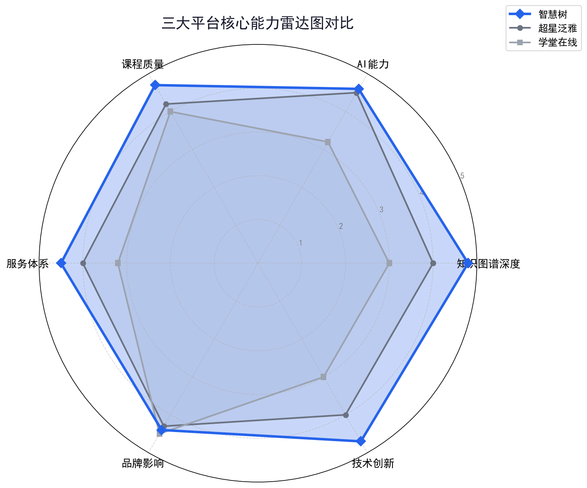
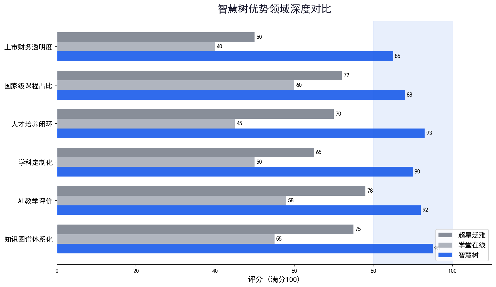
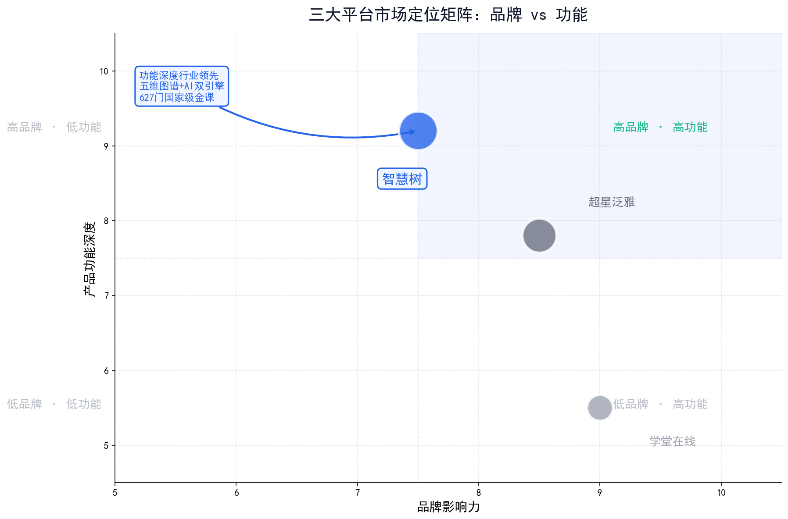

超星泛雅 · 智慧树 · 学堂在线 三平台深度对比
随着教育部"人工智能+教育"战略的深入推进，智慧课程平台已成为高校数字化转型的核心基础设施。本报告基于知识库文档（PDF 110页、PPT 74页）及全网最新数据，对国内三大主流智慧课程平台——超星泛雅、智慧树、学堂在线进行系统性竞品分析，从产品架构、知识图谱、AI能力、教学评价、服务体系等核心产品维度展开深度对比。
超星泛雅以工具矩阵广度和微服务架构见长，AI工具数量最多（18+项），市场占有率覆盖95%以上高校，但知识图谱各模块间关联性较弱，且面临期末周系统宕机等稳定性挑战。
智慧树以"五维图谱+AI双引擎"的体系化设计为核心，在知识图谱深度、教学评价能力、学科定制化、人才培养闭环等维度展现出显著领先优势，627门国家级金课的建设成果行业第一。
学堂在线依托清华背景和名校课程资源占据品牌高地，但在智慧化功能深度、知识图谱体系化建设上仍处于起步阶段。
2024年政府工作报告首次将"人工智能+"写入国家发展战略，教育部明确提出实施"人工智能赋能行动"。2025年12月，高校在线开放课程联盟联席会发布《智慧慕课行动宣言》，号召全国高校抓住AI重塑教育的历史机遇。
2025年世界慕课与在线教育大会首次定义"智慧慕课"（Smart MOOC）概念：以人工智能、大数据、虚拟现实等智能技术为驱动，以知识图谱为结构化核心，深度融合多模态资源，配备智能化教学工具，全流程支持个性化教与学、精准管理与科学评价的新一代课程范式。
以"学习通"为核心入口，覆盖教、学、管、评全流程，功能模块丰富，用户基数庞大，被中国917所高校选用，学银在线3.4万+门课程。
工具型平台 18+项AI工具五维图谱+AI双引擎，515所高校、2195门课程、627门国家级金课、37个学科团队、247个服务中心。
图谱驱动 金课行业第一 学科定制化清华大学发起建设，依托名校品牌优势，汇聚5600余门海内外高校优质慕课，千万级注册用户。
名校背书基于2025世界慕课与在线教育大会及行业建设标准，智慧慕课建设的核心功能维度包括：
产品定位：基于微服务架构的新一代智慧教学平台，以在线教学平台为中心，融合教室端、移动端、管理端，覆盖课前、课中、课后全流程。旗下"学银在线"由超星集团与国家开放大学共同发起。
AI工作台功能最为丰富，涵盖AI助教、AI教案、AI出题、AI批阅、文档AI解析、视频AI解析、AI翻译、AI绘画、作业查重、OCR识别、AI课件、智能编写、学情分析等18+项工具。AI助教基于自然语言处理、语音识别、语义理解、知识图谱等技术，贯穿课前、课中、课后学习全过程，支持"一课一库"智能问答。
支持课程知识图谱、思政图谱、问题图谱、目标图谱、学习地图、课程群知识图谱等多种类型，并支持自定义图谱构建。多所高校已联合超星开展"AI助教+知识图谱"专项培训。
上线课程总数 3.4万+门，国家级课程 1292门，省级课程 4600+门。
全国设有 40家分公司及办事处，提供7×8小时免费服务热线。
据公开报道，超星平台在高校期末周期间多次出现系统宕机、访问缓慢等问题，影响数百万学生正常使用；同时存在用户数据泄露风险事件，平台稳定性与数据安全能力有待提升。
产品定位：以"五维图谱融合、AI全程赋能"为核心理念，构建从"资源为中心"到"学生与发展为中心"的新一代智慧慕课平台。截至2025年12月，智慧树已服务 515所高校，建设 2195门智慧课程，覆盖全国31个省区市，拥有 37个学科教研团队 和 50+专业人才培养体系团队。
知识引擎（五维图谱）——行业唯一体系化图谱架构：
AI引擎（四大能力）：
三层递进架构：学科知识图谱（覆盖计算机、医学、经济学、化学等20+学科）→ 学科能力图谱（包含素质图谱、能力图谱、岗位图谱）→ 动态生长知识库（支持知识领域、知识单元、知识点的持续更新）。
四层覆盖：学校层（1个全校知识体系）→ 学院层（21个）→ 专业层（75个）→ 课程层（3434个）。
目标管理MBO+过程管理PDCA的完整人才培养闭环：P阶段完成培养体系设计、专业知识图谱、人才画像设计；D阶段执行教师教学应用、专业达成评价、学生学习场景；C阶段进行专业持续改进、运行检测；A阶段实现培养方案调整与课程内容更新。
产品定位：清华大学于2013年发起建立的MOOC平台，是教育部在线教育研究中心的研究交流和成果应用平台。
基于生成式AI技术开始布局知识图谱、AI助教等多元化智能场景，根据不同学科特点构建个性化课程增强模型，但整体仍处于起步阶段，尚未形成体系化的智慧课程建设能力。
| 功能维度 | 超星泛雅 | 智慧树 | 学堂在线 |
|---|---|---|---|
| 平台架构 | 微服务架构，云+教室+移动+管理四端融合 | 云平台架构，知识引擎+AI引擎双核驱动 | MOOC平台架构，以课程展示和学习为主 |
| 知识图谱 | 课程/思政/问题/目标/课程群图谱（多类型，关联性较弱） | 五维图谱（知识/能力/问题/思政/知识点空间） 行业唯一体系化三层架构四层覆盖 |
起步阶段，功能相对简单 |
| AI助教 | 24小时答疑，一课一库，NLP+语音识别 | 专属AI助教全程伴学，"一人一辅"智能学伴 | 具备基础AI答疑能力 |
| AI工具数量 | 18+项（数量最丰富） | 10+项（聚焦核心场景，深度更优） | 5项左右（仍在扩展） |
| 个性化学习 | 学习路径推荐、个性化自测 | 图谱漫游导航，"千人千面"认知路径 | 基础学习推荐 |
| 学科定制化 | 通用型工具为主 | 学科门户+应用+智能体三层次定制 37个学科团队50+专业团队 |
按学科推荐课程 |
| AI数字人 | 未明确支持 | 支持定制教师形象数字人 行业独家 | 未明确支持 |
| 教学评价 | 学情分析、AI评估试卷质量 | 多维度过程性评价，覆盖"知识-能力-素养"数字画像 | 作业测评、结业证书 |
| 人才培养闭环 | 教学运行+成果培育 | MBO+PDCA完整闭环（设计→执行→检测→改进）行业独家 | 未形成闭环 |
| 课程资源 | 学银在线3.4万+门，国家级1292门 | 2195门智慧课程，国家级627门金课 金课行业第一 | 5600+门课程（含海外），自有2300+门 |
| 运营服务 | 40家分公司，7×8小时热线 | 247个服务中心，专属学科团队全程伴随式服务 | 标准化平台服务 |
表1：三大平台功能覆盖度对比（蓝色底纹为智慧树优势项）

图1：三大平台核心能力雷达图对比（5分制，蓝色=智慧树）

图2：智慧树优势领域深度对比（百分制）

图3：三大平台市场定位矩阵
支持课程知识图谱、思政图谱、问题图谱、目标图谱、学习地图、课程群知识图谱等多种类型，并支持自定义图谱构建。工具层面覆盖较广，但各图谱间关联性较弱，尚未形成统一的知识体系框架。
以能力图谱为引领，知识图谱为基础，问题图谱为桥梁，思政图谱为灵魂，知识点空间为载体，形成五位一体、相互关联的完整知识工程体系。三层架构+四层覆盖，实现从学科到课程的系统化知识治理。行业唯一体系化三层递进
基于生成式AI技术开始布局知识图谱，但功能相对简单，尚未形成体系化的图谱建设能力，主要作为课程内容的辅助展示工具。
超星泛雅的AI工具数量最多（18+项），覆盖教案生成、试题生成、作业批阅、学情分析等教学全流程，但在AI与教学场景的深度融合上，更多停留在"工具赋能"层面。
智慧树的AI能力聚焦于四大核心场景（AI助教、图谱漫游、智能体、教学评价），数量虽少但深度领先：
学堂在线的AI能力处于起步阶段，主要提供基础答疑和简单推荐。
| 服务维度 | 超星泛雅 | 智慧树 | 学堂在线 |
|---|---|---|---|
| 服务网点 | 40家分公司及办事处 | 247个服务中心 | 标准化远程服务 |
| 服务团队 | 本地化销售+技术支持 | 37个学科教研团队 + 50+专业人才培养团队 | 平台运营团队 |
| 服务模式 | 7×8小时热线+现场+远程 | 专属学科团队全程伴随式服务 | 在线客服+邮件支持 |
| 培训体系 | 用户培训计划 | 学科定制化培训 + 持续运营支持 | 平台使用指南 |
表2：服务体系深度对比
基于本报告对产品架构、知识图谱、AI能力、教学评价、服务体系五大产品维度的系统对比，智慧树在技术创新深度、课程质量、服务专业性方面展现出显著的综合优势：
| 应用场景 | 推荐平台 | 理由 |
|---|---|---|
| 智慧课程/金课建设 | 智慧树 | 五维图谱体系、627门国家级金课经验、学科定制化能力 |
| 专业人才培养体系 | 智慧树 | MBO+PDCA闭环、能力图谱、专业达成评价完整解决方案 |
| 大规模通识教育 | 超星泛雅 | 学习通用户基数大、学银在线课程数量多 |
| 校内教学管理 | 超星泛雅 | 微服务架构灵活、四端融合、管理功能完善 |
| 名校品牌课程学习 | 学堂在线 | 清华背景、5600+门海内外优质课程 |
表3：不同场景平台选型建议